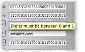
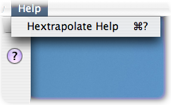

Learn about Hextrapolate
Hextrapolate is a conversion tool that converts numbers in any base — from base 2 (binary) right through to base 36 — into any other base. It can also convert to and from string representations of numbers using different, user-selectable text encodings (ASCII, UTF-8 and UTF-16).
Humans are most accustomed to thinking and working in base 10 (decimal) but computers regularly employ other formats, especially base 2 (binary), base 8 (octal) and base 16 (hexadecimal). Hextrapolate is useful not only for programmers but for any computer user that needs to convert numbers from one base into another.
Start typing

To get started just begin typing in one of Hextrapolate’s input fields. As you type each new digit or character all of the other fields will update in realtime to show the equivalent value expressed in other bases and formats. If you try to type a digit that is not valid for a given base Hextrapolate will show you a tool-tip indicating which digits are allowed. There are no arbitrary limits to the size of numbers that you can convert using Hextrapolate; even numbers containing thousands of digits and more can be converted.
Make choices

Preset fields are provided for the most common bases used in computing (binary, octal, decimal and hexadecimal). In addition to these fields Hextrapolate provides a number of custom fields which you can use to perform exotic conversions (for example, from Base 13 to Base 29) and encodings to and from textual string representations.
Get help when you need it

The extensive help documentation that you’re reading right now is always available from the Help menu; the help is embedded inside the application itself so you don’t need to be connected to the Internet to read it. The Hextrapolate Help is modelled to look just like the familiar and easy-to-use help provided by Apple with its own applications, and you can browse or search through it from within the Mac OS X Help Viewer.